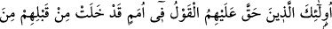
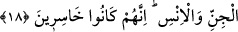
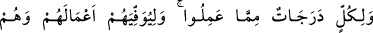
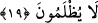

demektir. “Hulüv”, “geçmiş zaman” demektir. “Veylek”, “yazık sana” demektir. Bu
kelimenin aslı kişiye helâk ile bedduâ etmektir. Ancak burada onu îmâna teşvik murâd
edilmiştir. Yoksa gerçekten helâk olması istenmemektedir. Bu kelime aynı mânâda
değişik bir lafızdan mukadder bir fiilin mefûl-i mutlakı olmak üzere mansûbdur.
Bu kelime müsta’mel olmayan mastarlardandır. Bunun mef’ûlü bih olduğu da
söylenmiştir. Buna göre “Allah senin azabını ilzam etsin” yâni “Allah seni azaba dûçar
eylesin” demek olur. Allah Teâlâ ihkak-ı hak yâni hakkı ortaya koymak için ve bu kişinin
diriliş vaadini ana babasına isnâd etmesinin hatâ olduğunu tenbih için vaadi kendi zâtına
muzâf kılmıştır. Yâni “diriliş ana babanın değil, Allah’ın sözüdür” demektir. Sözünden
caymak bir nakîsa olup Allah’ı böyle bir şeyden tenzih etmek vaciptir.
18. İşte onlar, kendilerinden önce cinlerden ve insanlardan gelip geçmiş
topluluklar içinde, haklarında azâbın gerçekleştiği kimselerdir. Gerçekten onlar
ziyana uğrayanlardır.
“İşte onlar da”, bu bâtıl sözlerin sahipleri, “kendilerine (azâb) söz(ü)” -ki bu söz
Allah Teâlâ’nın “Senden ve onlar içinde sana uyan kimselerden (gelenler ile)
cehennemi dolduracağım” (Sâd, 38/85) sözüdür “-gerekli olmuş kimselerdir.
Kendilerinden önce geçen cin ve insan toplulukları arasında (azâbın içinde)
bulunacaklardır. Gerçekten onlar” şeytana uymakla ana sermayeleri olan aslî
fıtratlarını zâyi ederek “ziyana uğrayanlardır.”
19. Herkesin yaptıklarına göre dereceleri vardır. Allah, onlara yaptıklarının
karşılığını verir, asla kendilerine haksızlık yapılmaz.
Anılan bu iki gruptan “her birinin (inananların ve inanmayanların) yaptıkları
işlerden dereceleri vardır. Allah, onlara yaptıklarının karşılığını tam verir;” hayır ve
şer karşılığında evvelkilerin sevabını eksiltmek, sonrakilerin azabını artırmakla
“kendilerine hiç haksızlık edilmez.”
Buradaki “lâm” mahzûf ve ertelenmiş olan bir kelimeye müteallıktır. Sanki şöyle
buyurulmuş oluyor: Allah Teâlâ onlara, yaptıklarının karşılığını tam vermek ve onların
haklarını zâyi ve noksan etmemek için amellerine göre karşılıklarını takdir etmiştir.